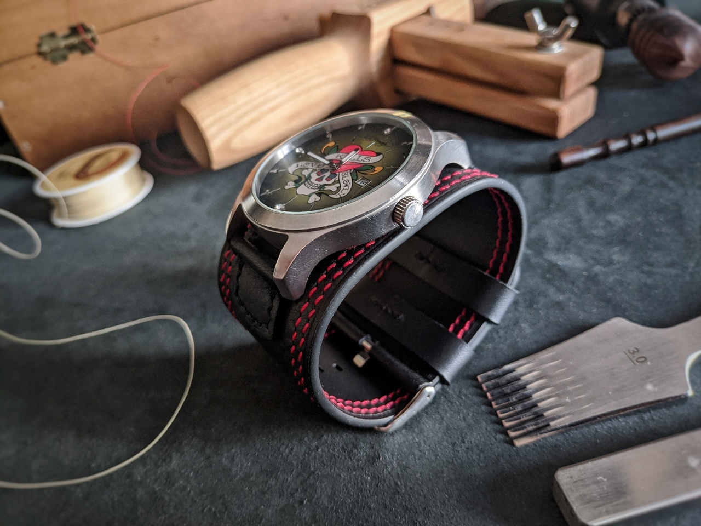
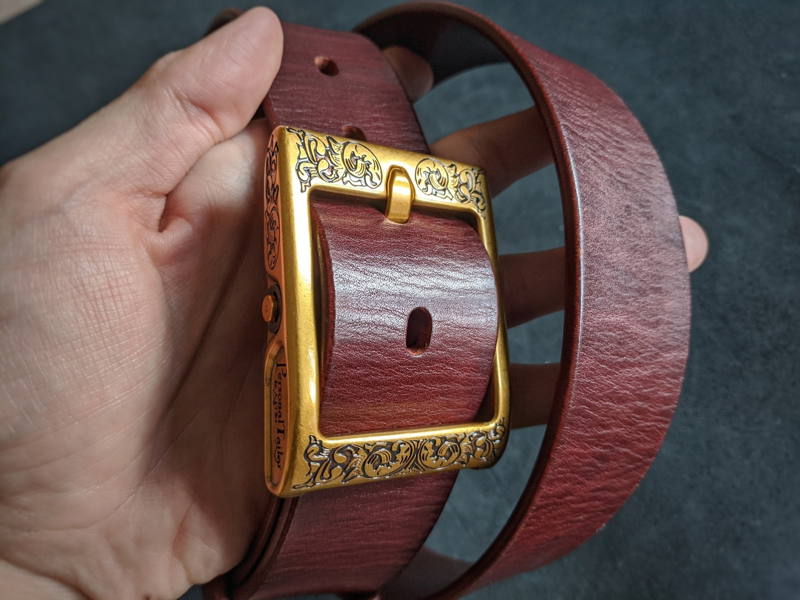
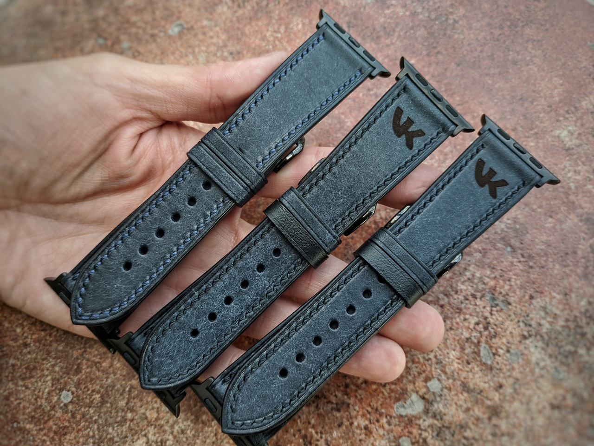
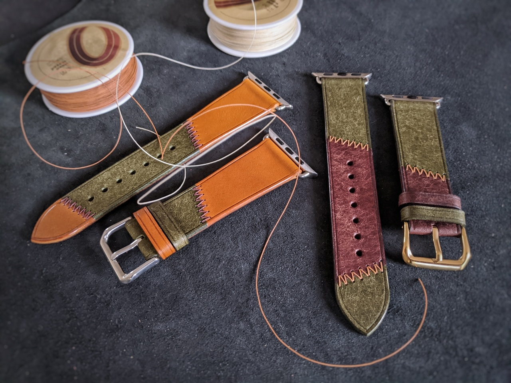
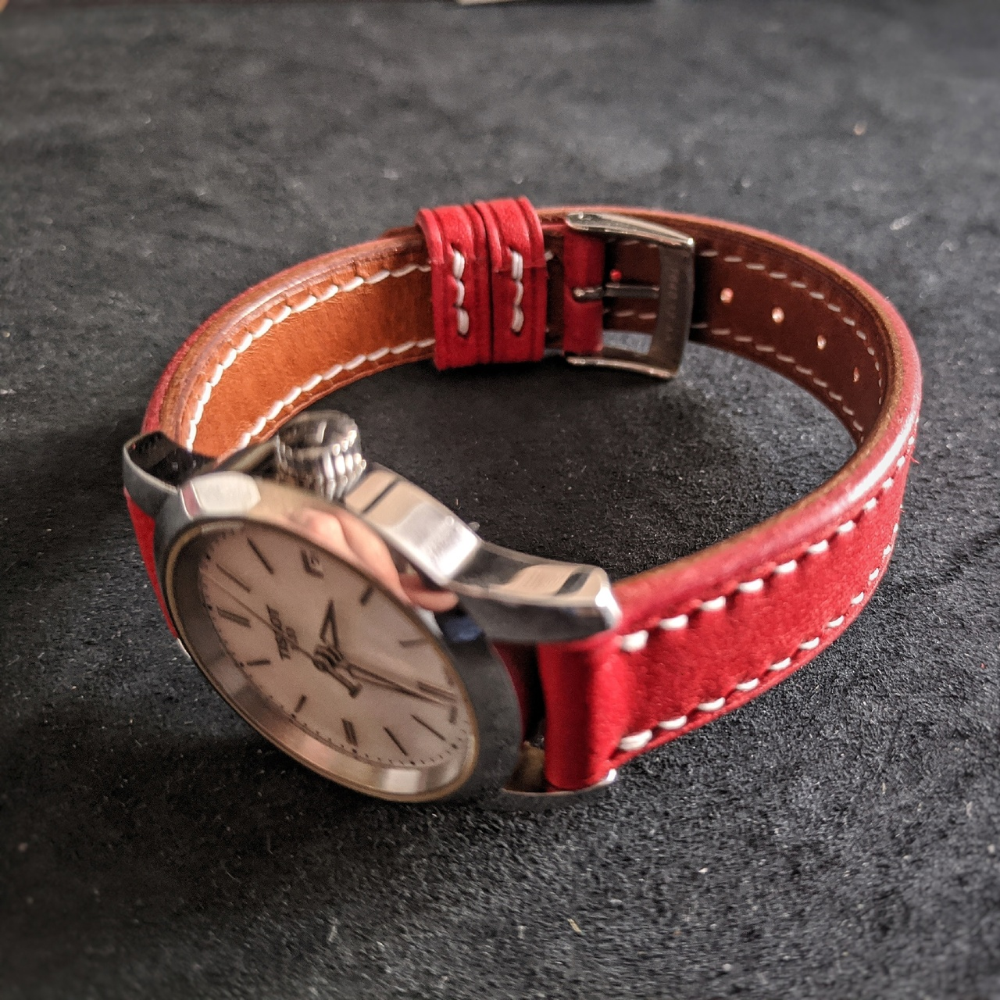
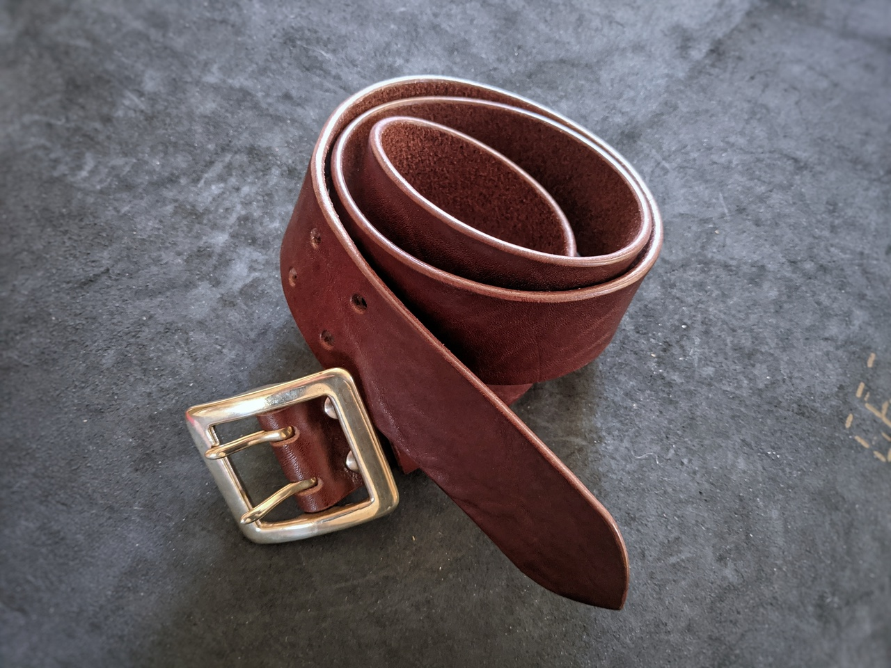

До курса основные продажи шли через Etsy, но после СВО и санкций этот канал исчез. Пришлось активизировать группу ВКонтакте, однако результата было недостаточно. Сейчас делает 4-6 заказов в месяц, так как есть основная работа. Дохода от хобби хватает на материалы и создание финансовой подушки, несмотря на кредиты.
Здесь история Егора Жукова, кожевника из Новороссийска.
— Расскажи, что было до курса, какой средний доход был в месяц? Сколько клиентов?
— До курса, если не брать период базового обучения, у меня было два источника продаж: сарафан в России и etsy зарубежом. Группа вк была создана, но не велась практически совсем. Был ещё инстаграм, но он был без рекламы, как витрина и хранилище фотографий. Из инсты почему-то ни одной продажи так и не пришло.
Зато etsy радовал, стоимость ремешков значительно выше, ручную работу иностранцы ценили больше, чем соотечественники. Для примера, если у нас ремешок продавался за 3к (на тот момент около 50$), то на etsy диапазон цен был 70-120$. Я спокойно делал 4-5 заказов в месяц, и в дополнение к основному заработку вполне хватало.
Это было до ипотеки и СВО, они у меня практически совпали по времени. Одновременно пропала возможность продавать за границу и вырос минимальный финансовый порог потребностей. Те же самые 3-3,5 тысячи за ремешок превратились в 30$))

Была просадка по клиентам явная, потому что долгое время я держался на сарафанных и повторных клиентах. И когда из способов привлечения остался только вк, я начал чаще постить в группе, вёл её так, как представлял сам.
До СВО было 15-35 тысяч рублей. С началом санкций и СВО слетел на 5-15 тысяч в месяц. Не берём новый год и гендерные праздники)
— Какие сложности были во время обучения на нашем курсе? Насколько сложно было учиться? на каком уроке остановился?
— Самые большие трудности были в том, чтобы регулярно и систематически выполнять задания)

А если по курсу, мне было сложнее всего определиться, хочу ли я делать в дальнейшем только ремешки, или это будет кожевенная мастерская общего профиля, как у всех. А, ведь, исходя из этого строится всё, от пипцов до рассылки. В итоге, остановился на ремешках, но до сих пор проскакивает мысль всё переделать, пока далеко не ушёл)
По урокам, сдано задание 15 урока, последнее, что читал, это про написание постов.
— Напомни, ты с куратором курс проходил или сам?
— Начал с куратором, но потом ряд ситуаций, и я пропустил срок, и кураторство закончилось.
— Какие сейчас действия делаешь для привлечения клиентов? Как часто пишешь посты? Запускаешь ли рекламу?

— Фактически, никаких. Хотя и знаю, что это не правильно. Но поток клиентов есть, многие говорят: "мы видели вашу группу, друзья показали, рассказали, посмотрели, и нам понравилось". Или падает сообщение о заполненной анкете, тогда ещё проще, сразу понятно, откуда человек.
— Вот что правильно настроенная группа животворящая делает)) А что смог себе позволить из того, что раньше не мог? Ну там, может, купил себе что масштабное или съездил куда?
— Самое главное для меня это то, что я инструмент для работы теперь покупаю не из семейного бюджета, не нужно обсуждать с женой, можем ли мы выкроить 20 тысяч на термостанцию, например, или 10-ку на пробойники другого шага) Плюс, финансовая подушка безопасности откладывается, это даже при наличии больших кредитных обязательств перед банками.
— Это очень крутой результат, я считаю, это ж прям финансовая стабильность. Все, остался только вопрос, сколько сейчас зарабатываешь? Сколько в среднем в месяц? Сколько клиентов?
— Я поднял цены. Теперь, в среднем, 4 - 6 клиентов дают мне те же 15-35 тысяч, что раньше получалось заработать только на etsy, продавая за границу.

— Скажи, у тебя это хобби и есть еще основная работа?
— Это хобби, конечно. Для основной работы слишком маленькие цифры и в количестве клиентов, и в суммах заработка)
— Ну, уточняю на всякий случай) Сколько, в среднем, времени в неделю ты уделяешь хобби?
— 2-3 часа в день в будни (бывают перерывы, когда домашние дела требуют внимания), от 6 часов в день на выходных.

В среднем, на один ремешок уходит 6-10 часов рабочего времени, в зависимости от модели и способа изготовления. То есть, в неделю получается 1-2 ремешка, с учётом отрыва на домашние дела. Когда прям не отвлекаясь день в день, получалось десять сделать. А бывало, и на один дорогой заказ уходила неделя рабочего времени и он перекрывал все затраты временнЫе.
Плюс, я в рабочее время включаю не только непосредственно манипуляции с кожей. Сюда считаю все заказы материалов, коммуникации с клиентами, творческие поиски, учёба.
— А можешь прикинуть свой доход за прошлый год? Есть у тебя подсчеты?
— Это сложно. Всё таки, это хобби. У меня довольно высокая маржа на изделии, поэтому я всегда точно знаю, что я в плюсе, что бы ни шил. Какое-то время в начале вёл экселевскую таблицу с клиентами и продажами, а потом пропустил пару заказов, и она стала неполной, я оставил это дело. И, честно говоря, чеки по самозанятости на наличку не даю, можно было бы в приложении посмотреть.

— Я могу взять за максимум 30 тысяч в месяц = 360 тысяч в год или больше было?
— Ну, бывали меньшие месяцы, но бывали и праздники, в среднем примерно так.
— До 500 точно не дотянул?
— Точно) Но дотяну в этом году! Очень хочу)
— Спасибо за ответы! Желаю в этом году, как минимум, троекратного роста!!!
— Спасибо! Я очень рад, что вы затеяли этот пост, я встряхнулся в своём уютном болоте, пойду дальше курс проходить))